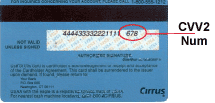
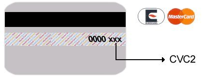
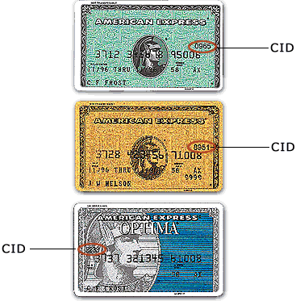
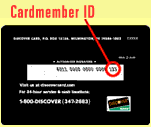

What is a (CVV) Credit Card Code?For Visa, MasterCard, and Discover cards, the card code is the last 3 digit number located on the back of your card on or above your signature line. For an American Express card, it is the 4 digits on the FRONT above the end of your card number. To help reduce fraud in the card-not-present environment, credit card companies have introduced a card code program. Visa® calls this code Card Verification Value (CVV); MasterCard® calls it Card Validation Code (CVC); Discover® calls it Card ID (CID). The card code is a three- or four- digit security code that is printed on the back of cards. The number typically appears at the end of the signature panel. This helps validate that a genuine card is being used during a transaction, especially in situations like mail orders, telephone orders or Internet orders where the card is not present. All MasterCard cards, both credit and debit, were required to contain CVC2 by January 1, 1997; all Visa cards must contain CVV2 by January 1, 2001. Beginning in October 2003, Discover requires the card code for all Discover transactions. By using the card code results along with the Address Verification Service (AVS), we can make more informed decisions about whether to accept transactions and reduce fraudulent transactions. What if I can't find or can't read my Card Code?Then leave the Card Code field on the order form blank. The merchant credit card processor makes a decision whether to accept or decline your card. If there is an issue, then we will contact you directly to discuss. |
How to find your CVV:VISAMASTERCARDAMERICAN EXPRESSDISCOVER |